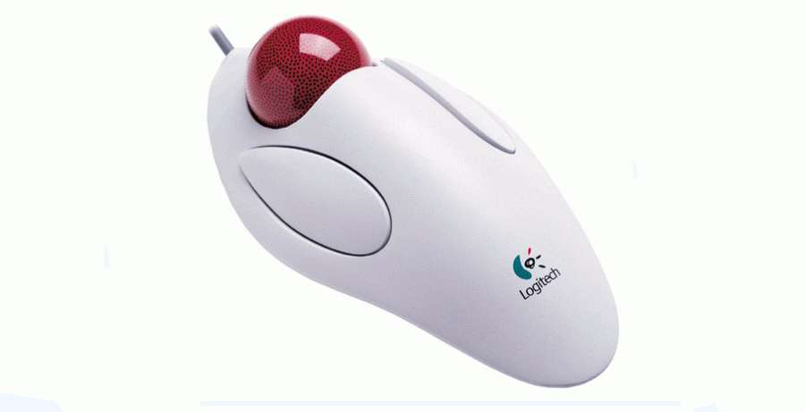

Трекболы

Введение в трекболы
Трекбол – это ближайший родственник мышки. Он представляет собой по сути ту же мышку, но только перевёрнутую вверх шариком. Трекболы имеют те же две или три клавиши управления, как и их родственница, и соединяются с системным блоком компьютера через последовательные порты COM1 или COM2.
Рисунок 1 - Пример трекболла
Следует отметить, что есть трекболы, которые вмонтированы в клавиатуры, и располагаются они обычно на месте клавиш управления курсором.
Самым главным и существенным отличием от мыши является то, что он не перемещается по поверхности стола или коврика, а постоянно находится на одном месте. Процесс управления курсором сводится к едва заметным движениям пальцев пользователя. Трекболы просто незаменимы в ситуациях, когда на рабочем столе нет места для движений мышки, ведь для трекбола нужна лишь небольшая часть стола, равная по размерам ему самому. Кроме того, трекбол абсолютно не критичен к той поверхности, на которой он размещён.
К разряду преимуществ трекбола над обычной механической мышью следует отнести то, что он не «собирает» грязь со стола.
Трекбол (англ. trackball) — указательное устройство ввода информации об относительном перемещении для компьютера. Аналогично мыши по принципу действия и по функциям.
Трекбол функционально представляет собой перевернутую механическую (шариковую) мышь. Шар находится сверху или сбоку и пользователь может вращать его ладонью или пальцами, при этом не перемещая корпус устройства. Несмотря на внешние различия, трекбол и мышь конструктивно похожи — при движении шар приводит во вращение пару валиков или, в более современном варианте, его сканируют оптические датчики перемещения (как в оптической мыши).
История
Трекбол изобрели Том Кранстон (TomCranston) и Фред Лонгстаф (FredLongstaff) и использовали его для управления специальной компьютерной системой под названием ДАТАР (DATAR) в далеком 1952 году, за 11 лет до изобретения компьютерной мыши. Изобретенное ими устройство использовало пятипальцевый шар для боулинга.
Рисунок 2 - Первый трекболл
В далеком 1963 году в компьютерной мыши использовался жесткий механический способ определения положения курсора по вертикали и горизонтали (с использованием прерывающих световой поток отверстий в двух расположенных перпендикулярно друг к другу вращающихся металлических колесах).
В конце 1990х годов замена шарика мыши на оптический указатель привела к уменьшению значимости трекболов и отодвинула их использование в отдельные узкоспециализированные ниши, где их отличительные особенности оказались наиболее востребованы.
Принцип работы
Упрощенная схема работы трекболла
Функциональная схема взаимодействия всех элементов контроллера трекбола
Функциональная схема контроллера трекбола
Трекбол оборудован двумя кнопками и двумя оптическими датчиками, контролирующими перемещение по горизонтали и вертикали. Так как сигналы датчика импульсные и меньше 5V, то можно не использовать аналого-цифровой преобразователь.
Для работы процессора еще необходимы три компонента: система синхронизации, схема сброса и схема питания микропроцессора.
На выходе система через СОМ-порт подключается к компьютеру. В СОМ-порт передается посылка данных, а также сигналы разрешения передачи.
Структурная схема контроллера трекбола
Поскольку для работы трекбола необходимо два датчика движения, а для каждого датчика две оптопары, то для передачи данных о перемещении в процессор нужно задействовать четыре линии. Так как в трекболе две кнопки, то для них нужно выделить еще две линии. Итого: для передачи данных в процессор нам нужно задействовать шесть линий. Это будут RB0, RB1, RB2, RB3, RB6, RB7.
Для передачи данных нужна еще одна свободная 8-битная линия, подключенная к контакту 4(RxD) COM-порта. Это будет RB5 Для работы системы необходима схема синхронизации. Опционально - это линии OSC1 и OSC2. Питание будет осуществляться через СОМ-порт. Для этого будет использоваться управляющая линия 4(DTR). Система сброса управляется через линию MCLR. Низкий уровень на этом входе генерирует сигнал сброса. Эта линия будет подключена к питанию, так как низкий уровень на MCLR активный.
Оптопара
В качестве детектора движения по одной оси используется две оптопары, которые однозначно определяют, в какую сторону происходит движение. Одна оптопара представляет собой фотодиод и фоторезистор, подключенный к уровню логической единицы (+5V). Между ними находится зубчатое колесо, которое то пропускает, то закрывает свет. Когда на резистор светит диод, его сопротивление максимально, то есть на выходе логический ноль, и наоборот. Так определяется движение.
Датчик движения
Две оптопары нужны для правильного определения, в какую сторону было движение, вперед или назад. Это достигается тем, что оптопары находятся по разные стороны зубца. Получается, если на выходе первой оптопары есть сигнал, а на выходе второй оптопары нет сигнала - это движение вперед, и наоборот, если на выходе первой оптопары нет сигнала, а на выходе второй оптопары есть сигнал - это движение назад. Если на выходах обеих оптопар есть сигнал или нет сигнала, то движения нет, трекбол стоит на месте.
Питание оптопары
Сложность питания оптопары заключается в том, что от +5V нужно питать фотодиод, на который подается +2,5V. Следовательно, нужно добавить два резистора (R4 и R5), чтобы получить делитель напряжения, на них было нужное нам падение напряжения.
Виды трекболов
Представленные на рынке модели трекболов существенно различаются. Прежде всего, трекболы отличаются размещением шарика: на некоторых моделях он управляется большим пальцем руки, на других же расположен по центру или правее центра, и управляется указательным, средним и безымянным пальцами.
На большинстве моделей шарик достигает 3-6 см в диаметре,однако существуют и модели с шариком около 1 см в диаметре. Почти на всех моделях кроме шара и кнопок присутствует также колесо прокрутки.
Эргономичность
Многим поклонникам этого манипулятора трекбол удобен не только тем, что для работы с ним не требуется места, но и тем, что во время работы рука остается неподвижной в запястье. Например, производитель трекболов ITAC Systems, Inc. утверждает, что после 4-часовой активной работы с мышью, в результате усталости запястья, рука становится до 60 % слабее, тогда как использование трекбола не оказывает влияния на исследуемые показатели. По той же причине некоторые предпочитают также графические планшеты.
Встречались старые модели мобильных ПК (i386), к которым трекбол жёстко пристёгивался сбоку. При работе кисть руки лежала на поверхности стола естественным образом, располагаясь справа, частью под трекболом. Такая позиция руки давала нагрузку только на мышцы, связанные с большим (шарик) и указательным (кнопка) пальцами, что обеспечивало наибольший комфорт.
Популярность
В настоящее время трекболы достаточно редко применяются в домашних и офисных компьютерах, однако нашли применение в промышленных и военных компьютерах, где пользователю приходится работать в условиях недостатка места и наличии вибрации. Так, трекболы используются в кабинах управления ракетного комплекса С-300. и АСУ ЗРВ - таких как Байкал - 1. Официальное "военное" название этого устройства - шарово-кнюпельный механизм, в терминологии С-300 - шаровой орган наведения (ШОН). Некоторые модели геймпадов, как например Space Orb, имеют встроенный трекбол. Трекбол используется в коммуникаторе HTC Hero и некоторых моделях Blackberry.